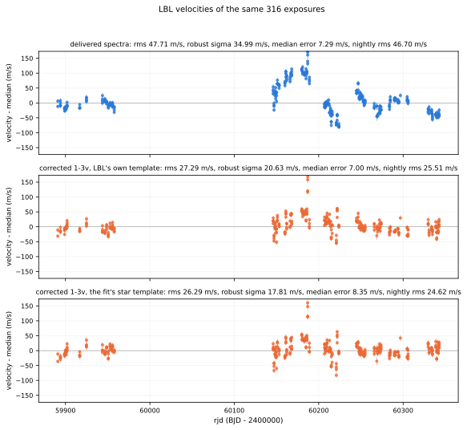
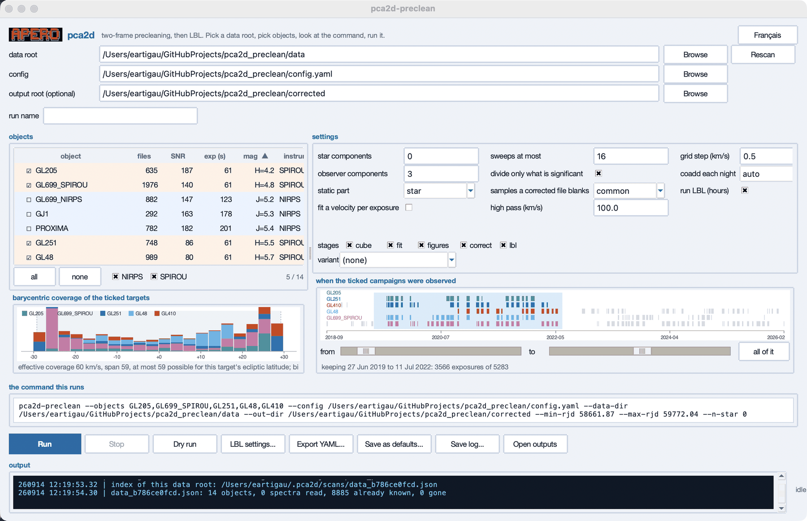
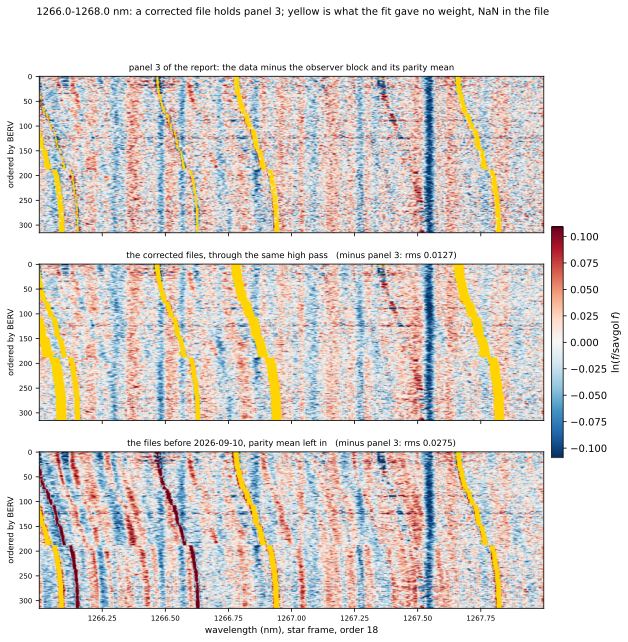
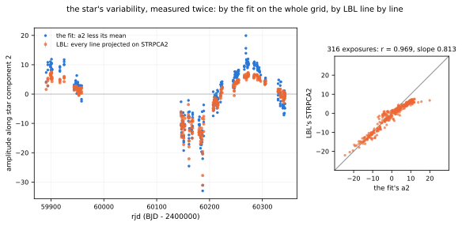
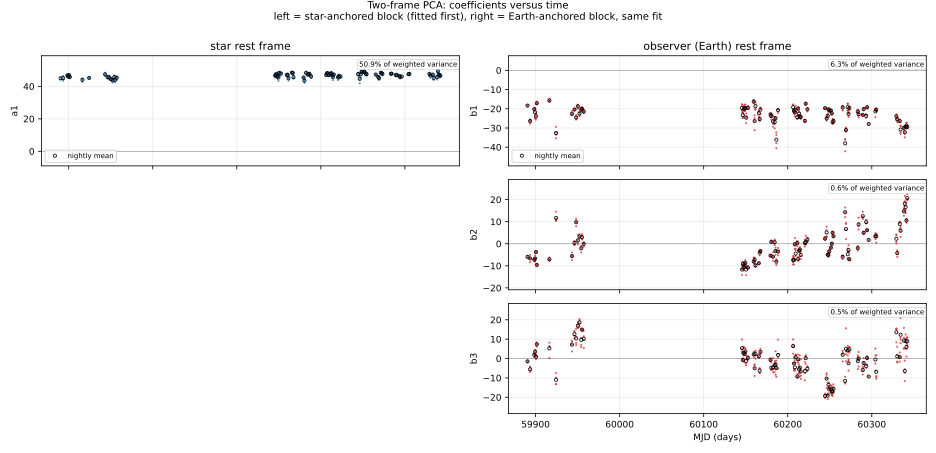
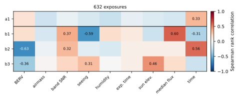

What it buys
TOI-2120, 316 SPIRou exposures over 452 days, corrected with one star and three observer components, then measured by LBL on the same exposures before and after:
| spectra | template | rms | robust sigma | nightly rms | median error |
|---|---|---|---|---|---|
| as delivered | LBL's own | 47.7 m/s | 35.0 m/s | 46.7 m/s | 7.29 m/s |
| corrected, 1-3v | LBL's own | 27.3 m/s | 20.6 m/s | 25.5 m/s | 7.00 m/s |
| corrected, 1-3v | the fit's star | 26.3 m/s | 17.8 m/s | 24.6 m/s | 8.35 m/s |

The window
pca2d-gui
For anyone who should not have to read a command line before their
first run. It does nothing the command line cannot: every setting is
one key of config.yaml or one flag of
pca2d-preclean, and the command it is about to run
is written out in full, so it can be read before anything
happens and copied into a terminal afterwards. It runs that command as
a subprocess, shows its output as it comes, and can stop it. It comes
with the package, so installing it is all there
is to do first.

--min-rjd and --max-rjd: that
is how a campaign is cut into seasons.
Two roots, and nothing written in the first
A data root, shown in full, since data means different
folders from different working directories and a campaign usually lives
behind a link onto a shared disk. Nothing is ever written there, so it
can be a read-only archive. An output root, proposed as
corrected beside the data root when the field is left
empty: the corrected spectra are a copy of the campaign, tens of
gigabytes, and belong on the disk the campaign is already on. A
run name, optional, which names the folder the run
writes into, and the window says when a run of that name already exists
rather than letting it be found out afterwards.
A window opened for the first time has both roots empty
and its configuration set to the config.yaml that came with
the installation, found beside the package rather than resolved against
whatever folder the window was started from. Where the spectra are and
where their copies go are choices about somebody's disks, and a field
that opens with a plausible path in it invites a run against a folder
nobody picked. The status line says pick a data root for as
long as there is none, the log says what such a folder holds, and the
command box says tick a target rather than showing a command
with no --object in it.
The targets, and what is known about them
The list is one row per campaign folder: the number of spectra, the
median signal-to-noise, the median exposure time, the magnitude with
the band it is in, and the instrument. Rows are grouped and tinted by
instrument, a column heading sorts by that column and again to reverse
it, the object heading a third time for the default order, and what is
not known sorts last, never first. A tick box per row, with
all, none, a double-click or the space bar,
and a count of what is ticked against what is listed. The boxes under
the list show or hide one instrument's targets.
Those numbers come from the headers, so the first visit to a data root
reads one header per spectrum: the per-order extraction signal-to-noise
APERO wrote (EXTSNxxx), the exposure time, the barycentric
velocity, the coordinates, the magnitude under whichever keyword that
instrument writes, and INSTRUME, which is read from the
FILE and never from a configuration. The answers go into one index per
root under ~/.pca2d/scans/, named after the root with a
digest of its full path, so two roots whose last folder is called
science cannot share one index.
Every later visit draws the list at once from that index, then checks the root: a file is taken as it was if its size and modification time are unchanged, and only what was added or replaced is read, which is what Rescan does after copying new spectra in. The names and the file counts appear before a single header is read, since they cost one folder listing. A campaign's first numbers arrive from ten spectra spread across it rather than the first ten, and carry a tilde until the rest are in: file names sort by date, and the first ten of a campaign are one night's weather. On GJ 1 they give 134 against the campaign's 163. A field added to the index re-reads the files that lack it and only those, a file that cannot be read is recorded as unreadable rather than retried at every visit, and deleting an index costs the few seconds of one scan and nothing else.
One target, or several against one observer basis
Tick one box for a solo run. Tick several and they are fitted together against a single observer basis, each star keeping its own spectrum per order parity. The atmosphere and the instrument belong to the night rather than to the target, and no basis can follow one star when several, with different barycentric coverage and systemic velocities, constrain it. They must come from one instrument: two ticked instruments refuse to run, because a run is one domain, one grid and one set of extensions, all read from the instrument. The window reports how many nights the ticked campaigns share, as information and not as a requirement: the observer components are a parasite that is always present, what a fit measures is their pattern, and nights no other star of the group saw widen the range of conditions that pattern is measured over.
What the sky allows, before anything is run
Under the list, the barycentric coverage of whatever is ticked, as a histogram in bins of 3 km/s stacked by star, with three numbers: what the campaign covers, its span, and what the target's ecliptic latitude ALLOWS. That last one is fixed by the solar system, |BERV| ≤ 29.78 cos(β), and it decides whether the method can work on that target at all: TOI-1452, at +80.5 degrees, can never span more than 9.8 km/s. A coverage short of the span means gaps, which more nights fill; a span short of what is possible means a young campaign; a small possible means the wrong target. It is the most useful thing on the window to look at before starting a twenty-minute run, because the correction is worth about a factor of two where the span is wide and costs about as much where it is not.
Beside it, when the ticked campaigns were observed: one mark per exposure in its star's colour against a calendar axis, and two sliders that keep a date window, with a line underneath saying what is kept and how many exposures of how many that is. What falls outside is neither fitted nor corrected, which is how a campaign is cut into seasons and how the two ends of a baseline are compared. all of it puts the window back to the whole campaign, which is the nominal path.
The settings that change a result, and only those
How many components in each frame, whether a velocity is fitted per exposure, how many sweeps at most, whether only the significant part of the correction is divided out, which samples come back as NaN, the high pass, the grid step and nightly coadding. Resting the pointer on one writes what it means at the bottom of the window, and after a moment in a box: the explanations are the ones in the documentation, not a restatement of the label. Nothing cosmetic is on this panel, on purpose, and neither is anything settled: the star is one cubic B-spline and the static part is one star spectrum per order parity, both fixed in the code, so the window does not ask. The older modes are still read from a config or a variant file, for redoing the runs that were measured on them. Whether LBL is run, which is hours of work, is in the LBL window: the stages already say whether the lbl step happens at all.
The stages, cube, fit,
figures, correct and lbl, are
ticked in any subset and run in that order, so a fit can be reused and
only the correction redone. A variant from
variants/ is the nominal plus the lines that variant
changes, and it writes under its own name so that two variants cannot
land in one folder.
LBL settings... opens the lbl: block on
its own: what is measured (the delivered spectra, the corrected ones, or
both), what the corrected object is called next to the delivered one,
which template it is measured against, where LBL's tree is, which of its
steps run, and whether the spectra get there as symlinks or as copies.
That is the equivalent of the wrapper script, and it is the step that
produces velocities.
What it writes, and what it remembers
- Dry run resolves everything, says what it would do, and touches nothing.
- Export YAML saves the settings that differ from the configuration as a variant file, which is how one run is made reproducible. A variant that repeats the nominal says nothing, and the window refuses to write one.
- Save as defaults writes those same settings into
config.yaml. It edits the lines it has to and nothing else, so the comments that say which measurement chose each value survive, where ayaml.safe_dumpof the parsed document would have deleted all of them. It asks first, and shows exactly which keys it is about to change. - Save log writes what the window has shown. The run
prints there as it goes, in the colours it uses in a terminal, green
for progress, blue for a number, orange for something skipped, red for
what stops a run, and the window's own lines take the same form,
YYMMDD HH:MM:SS.SS | message. - Open outputs opens the folder the run is writing into.
English or French, one button, everything included: the
labels, the explanations and the log lines. The window holds no state of
its own beyond the last settings and what was ticked, in
~/.pca2d_gui.json, and the per-root index under
~/.pca2d/. It does not resolve the configuration itself,
never touches the data, and every choice it offers exists on the command
line, which is what the box at the bottom is there to prove.
Install it
One conda environment, described by the repository itself, and five lines. It holds both codes, this one and LBL, because having to deactivate one to run the other is how a t.fits gets measured by the wrong version of something.
git clone https://github.com/eartigau/pca2d_preclean.git
cd pca2d_preclean
conda env create -f environment.yml
conda activate pca2d-preclean
./check.shOne alias, written once, so that a new terminal is one word from being ready:
echo "alias pca2d='source $PWD/pca2d.sh'" >> ~/.zshrc
pca2d then leaves whatever conda environments are active,
however many deep, enters this one, and prints what there is to run.
Leaving rather than activating on top is the point: the environments
that matter here hold versions of LBL, and the wrong one on the path is
how a t.fits gets measured by the wrong version of something.
./check.sh is the check that it worked: 489 tests, about
thirteen seconds, and not one spectrum or network call among them. Then put the spectra of
a target in data/<object>/ under the input root,
which is never written to, and either
pca2d-preclean --object TOI-2120 # the whole thing, t.fits to velocities
pca2d-gui # the same, in a window
The environment pins rather than floors its versions, because LBL pins
its own exactly: numpy==2.3.3, astropy==7.2.0,
scipy==1.17.0 and the rest, python 3.12.
environment.yml repeats those pins so that conda installs
them and pip finds them already satisfied. The repository itself is
private for the moment: the clone needs access, which
is a message away.
The idea
Over a year of observing, the barycentric velocity sweeps by tens of kilometres per second. That is enough to separate the star from the atmosphere, but only if the model is told which of the two travels. Each exposure is the log of its flux less a Savitzky-Golay of it (a 100 km/s high pass, 201 samples of 0.5 km/s; runs made before 2026-09-11 used 151 of them, 75 km/s), on one log-uniform grid in the observer's frame, as two rows, its even orders and its odd ones:
y_n = S_n P a_n + v_n d(S_n P a_n)/dv + Q b_n + m_pS_ncarries the star basisPinto exposurenby its barycentric velocity. On a log grid a Doppler shift is a translation of atanh(v/c)/(dv/c) samples, relativistic, andS_nis an exact Lanczos operator for it rather than an interpolation that would smear what it touched.P a_nis the star;Q b_nis what stands still on the detector: telluric absorption, OH emission, the instrument.v_nis one velocity per exposure, times the derivative of the star as reconstructed. Without it the observer block learns the star's own motion and the correction divides it out of the flux. With it the motion is fitted, and stays in.m_pis one offset per order parity, in the observer's frame. Consecutive orders overlap, and at a given wavelength one parity samples near an order's centre and the other near its edge, where the resolution differs. It is taken out before the fit and put back into the correction.
The coefficients of both blocks are solved together for each exposure, under weights taken from the noise you can measure rather than the noise a photon model claims. The two disagree by a factor of fifty at the red end of a SPIRou spectrum: past about 2200 nm the thermal background dominates, the pipeline subtracts its mean and not its variance, and a photon model computed from what is left reports the noisiest part of the detector as the quietest.
Every step, on one page
1667 to 1672 nm of TOI-2120, drawn in the star's rest frame with the 316 rows ordered by barycentric velocity. Vertical structure belongs to the star; anything slanted does not. The OH airglow runs diagonally through the reconstruction and is gone from the third panel.

What a corrected file holds
Panel 3, sample for sample. A corrected file is the delivered flux
times exp(−(Q b_n + m_p)) on its own pixels, and
NaN wherever the fit gave a sample no weight, so LBL is never handed
data the model never saw. The star block and the velocity term stay
in: they are what LBL is about to measure. Everything else in the
t.fits, wavelength solution and blaze included, is copied through.

LBL, built in
The corrected spectra exist to be measured, and the only honest way to
know whether the correction helped is to measure both. The
lbl stage puts two objects side by side in
one LBL tree: TOI-2120, symlinked to the spectra as
delivered and measured against the template LBL builds from them, and
TOI-2120_PCA2D_1-3v, symlinked to what the run corrected.
The name carries the run's tag, because LBL takes a whole science
folder and two corrections in one would be measured as a single series
without a word.
The corrected object's template is the fit's star. The first star component at its mean amplitude is a high-passed template of the star, fitted to every exposure at once with the atmosphere already described by the other block. Each order parity gets its own, the star block plus that parity's weighted mean of what the fit left, since LBL measures an order against the template of its parity. The stage writes it in LBL's template format, by LBL's own writer, and puts it where LBL looks for that object's template, so LBL's template step finds it and has nothing to do. A template LBL built itself is never replaced. Through the 75 km/s high pass of the day it was measured, it agrees with LBL's own template for the same spectra at a correlation of 0.93 and a slope of 0.94, and 0.99 and 0.99 in H.
The star components past the first are variability
indicators, and LBL already knows what to do with those: it
projects every line's residual on RESPROJ tables, its DTEMP temperature
gradients. With two or more star components the stage writes the
others as the same tables, STRPCA2 to
STRPCAn, measured on the star itself rather than taken
from a model, and the rdb gets each exposure's amplitude along them and
its error. LBL reads those tables in the star's rest frame, which its
mask step measures, so the corrected object's mask is made first, then
the tables, then the velocities.

That same fit is also the warning that goes with it. Its a2 follows the barycentric velocity (−0.55), the seeing (−0.58) and the sun's elevation (−0.49): a star component modelling the sky. Its velocity term absorbed shifts of 232 m/s rms that follow the barycentric velocity, the correction left that in the flux, and LBL's velocities on those spectra scatter by 67 m/s, against 27 with one star component. A second star component is a variability indicator once the correlation table says it belongs to the star.
What the stage leaves is meant to be read and rerun by hand:
lbl_config.yaml in LBL's own keys, and
run_lbl.py, an ordinary LBL wrap script with one runparams
dict per object. lbl.run: true or --run-lbl
has the stage run it.
What the coefficients do in time
One component in the star's rest frame, three in the observer's, one point per exposure over 452 days.

And what they follow
A component carries no label. That one varies is a result; what it varies with says what it is describing. Every run writes this matrix without being asked, because it is the diagnostic that catches a "stellar" component quietly modelling the sky.

Running it
Spectra go in data/<object>/ under the input root and
everything a run writes goes under the output root, so the archive it
reads is never the folder it writes to. Then:
pca2d-preclean --object TOI-2120
That is the whole interface. The instrument is read from the
INSTRUME keyword of the files, never chosen on a command
line, because reading the wrong extension raises no error: it returns
different photons. Five stages, cube, fit,
figures, correct and lbl, each
announcing how long it took. On 316 SPIRou exposures the fit, the
report and the correction take twenty to thirty minutes, and LBL about
half an hour per object.
output.fits_directory keeps a run's products on another
disk: the run folder, and every LBL folder but the one made of
symlinks, become links to it before anything is written, and a run
stops rather than write locally when that disk is not there.
Adding a spectrograph
A block in config.yaml, not a line of code:
instruments:
YOURS:
extensions:
flux: FluxAB
wave: WaveAB
blaze: BlazeAB
recon: Recon
sky: OHLine
domain:
wave_min: 955.0
wave_max: 2500.0
wave0: 955.0
lbl:
instrument: SPIROU
data_source: CADC
The wavelength solution comes from the extension, never from header
polynomials, and the blaze from the blaze extension of the same file.
LBL's name for the spectrograph goes with it: LBL calls NIRPS
NIRPS_HA or NIRPS_HE by the mode it was
observed in, and the wrong one raises no error.
What comes out
- outputs/<object>/<tag>/<object>_<tag>.pdf: one multipage document, the resolved parameters as selectable text first, then every figure, with bookmarks.
- fit.npz, twoframe_components.fits, the coefficients as CSV, and resolved_config.yaml: exactly what ran, next to what it produced.
- corrected/: the corrected spectra, one per input file, each saying in its header what was divided out of it and carrying every amplitude the fit has.
- star_template.fits, lbl_config.yaml and run_lbl.py: LBL set up on both sets of spectra, the corrected ones against the fit's own star.
The tag is the number of star and observer components, and
v when the velocity term was fitted: 1-3v
above.
Access
The repository is private for the moment. If you would like access, or would like to try it on a dataset of your own, contact Étienne Artigau (Université de Montréal). This page stays public so the method and its figures can be pointed at.